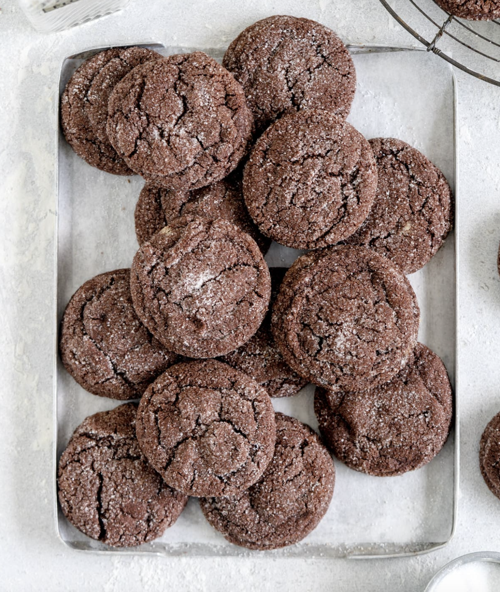

Chocolate Cookie

Description
Chocolate cookies are a timeless treat beloved by people of all ages around the world. These delectable sweets are characterized by their rich cocoa flavor and soft, chewy texture. To create chocolate cookies, a combination of butter, sugar, eggs, flour, and cocoa powder is mixed together to form a smooth dough. Additional ingredients such as chocolate chips or chunks are often folded into the dough, enhancing the cookie's chocolatey goodness. Once shaped into rounds and placed on baking sheets, the cookies are baked until golden brown, filling the kitchen with a tempting aroma that signals their readiness. Whether enjoyed fresh out of the oven with a glass of cold milk or packed into lunchboxes for a delightful snack, chocolate cookies never fail to satisfy cravings for something sweet and comforting.
The versatility of chocolate cookies allows for endless variations, from classic double chocolate chip to creative twists like sea salt dark chocolate or mint chocolate cookies. Some recipes incorporate nuts or dried fruits for added texture and flavor complexity. Whether soft and gooey or crisp and chewy, chocolate cookies offer a delightful indulgence that can be enjoyed year-round, making them a favorite for bake sales, holidays, and everyday treats.
Ingredients
- 300g all-purpose flour
- 50g dutch process cocoa powder, sifted
- 1 tsp salt
- ¾ tsp baking soda
- 225g unsalted butter, at room temperature
- 200g brown sugar
- 100g granulated sugar
- 1 large egg (50g not including the shell), at room temperature
- 1 tsp vanilla bean paste or vanilla extract
- Granulated Sugar for Rolling
Steps
- Preheat the oven to 350°f / 180°c. Line three baking trays with parchment paper. In a medium bowl, sift together the flour, cocoa powder, salt, and baking soda. Set aside.
- In the bowl of a stand mixer fitted with the paddle attachment or in a large bowl using an electric mixer, cream the butter and sugars until light and fluffy, 3-4 minutes. Add the egg and vanilla, and beat until combined. Add the flour and cocoa mixture, and beat on low until just incorporated.
- Using a cookie scoop, scoop 2 tbsp worth of mixture at a time (about 40g). Roll into a ball using your hands, then roll generously in granulated sugar. Place on the baking tray, leaving room to spread (I had 8 cookies per baking tray).
- Bake one tray at a time for 11-12 minutes, until the cookies have puffed up and are beginning to crack on the tops, and the edges are set. Remove from the oven and allow to cool on the baking tray for 15 minutes then transfer to a wire rack to cool completely.
- Store cookies in an airtight container at room temperature for up to 5 days.